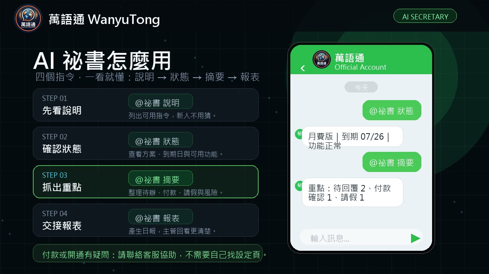

選方案前先問兩件事：現在只需要文字翻譯，還是已經需要處理照片、語音與工作紀錄？群組只是短期測試，還是每天都會使用？先回答這兩題，比直接挑最貴或最便宜的方案更準確。
免費版目前包含什麼？
- 中文、英文、日文、韓文翻譯不限次數。
- 其他支援語言每日 50 則。
- 加入即可使用，不需要先綁信用卡或付費。
- 適合第一次測試、個人輕度使用或確認翻譯方向。
免費版的重點是先確認文字翻譯與群組流程是否適合，不代表所有進階功能都免費。需要語音、圖片 OCR、摘要、報表與紀錄整理時，再看付費方案。
付費版增加的工作功能
| 功能 | 適合的情境 | 使用提醒 |
|---|---|---|
| 完整語言清單 | 印尼文、越南文、泰文、菲律賓語等工作群組 | 先用 @支援語言 核對當下狀態 |
| 語音翻譯 | 不方便打字、需要口述的現場 | 環境噪音與口音可能影響辨識 |
| 圖片 OCR 翻譯 | 班表、公告、SOP、菜單與藥袋 | 照片需清楚、正面、光線均勻 |
| 紀錄搜尋與統計 | 回查請假、付款、交期與工作通知 | 搜尋結果仍應由主管確認情境 |
| AI 摘要與報表 | 訊息量大、需要交接與每日整理 | 摘要用於輔助，不取代原始訊息 |

目前官網方案整理
| 方案 | 期間與價格 | 適合對象 |
|---|---|---|
| 免費版 | NT$0 | 先測文字翻譯與基本流程 |
| 月費版 | NT$99／30 天 | 短期專案或先測完整功能 |
| 半年版 | NT$499／180 天 | 中期穩定使用 |
| 一年版 | NT$799／420 天 | 長期固定使用的工作群組 |
| 尊爵版 | NT$2,500／每群組永久買斷 | 需要專屬客製化機器人的群組 |
價格核對原則本文依 2026-08-19 官網公開方案整理。正式付款時，請以萬語通官方 LINE Bot 產生的綠界付款頁及訂購畫面為準。
三種常見需求怎麼選？
- 還不知道適不適合：先用免費版完成一組雙向文字翻譯。
- 需要照片、語音或報表：先用月費版測 30 天，確認工作流程後再改長期方案。
- 群組每天固定使用：比較半年版與一年版的使用期間，不要只看單次付款金額。
不要為了少數偶發訊息直接買長期方案，也不要在明確需要 OCR 或報表時只用免費文字翻譯。方案應配合工作需求，而不是反過來。
付款與開通注意事項
- 付款請從官方 LINE Bot 或官網正式入口進入，不接受陌生私訊提供的付款連結。
- 目前付款連結用於開通或延長，不等同信用卡週期自動續扣；是否有自動扣款，以綠界付款頁顯示為準。
- 付款後若功能未開通，先保留付款完成畫面與 LINE 對話，再使用官方客服表單聯絡。
- 數位服務退費條件請先閱讀使用條款。